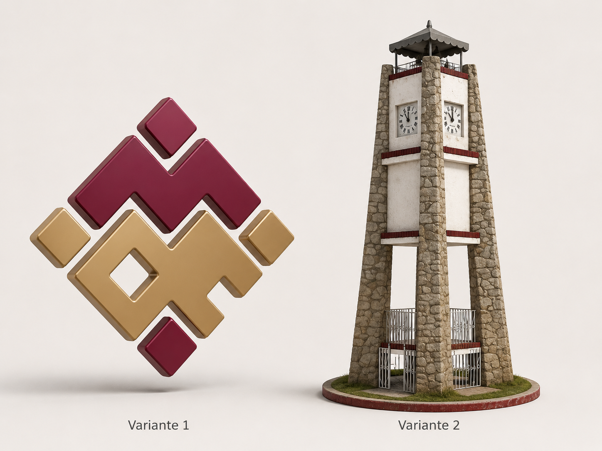
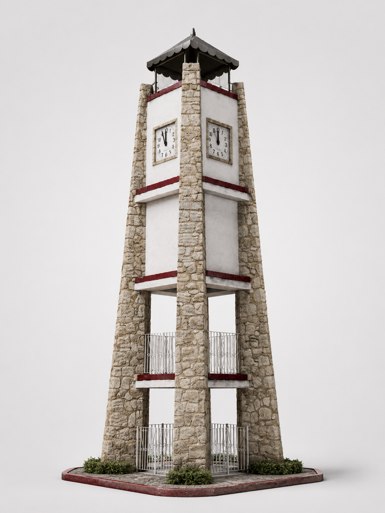
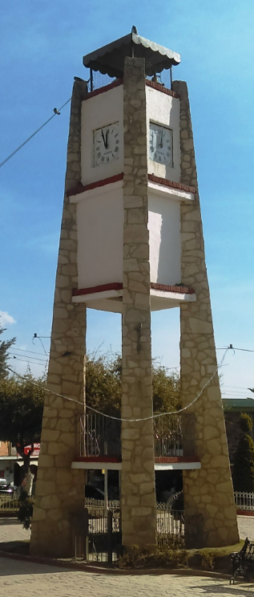
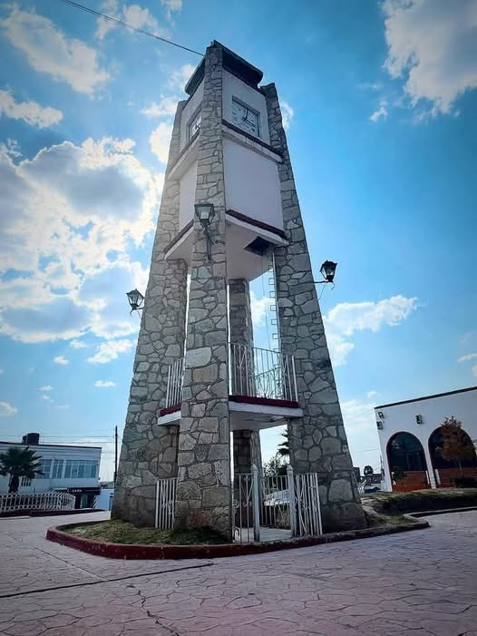

Prototipo + variantes
Variantes visuales del modelo 3D
Este paquete conserva el prototipo original del logotipo y agrega una segunda variante visual basada en el reloj monumento del municipio. Aquí puedes visualizar el comparativo y la variante 2 de forma aislada.
Comparativo de variantes

Variante 1: logotipo geométrico original. Variante 2: propuesta inspirada en el reloj monumento municipal.
Variante 2 · reloj monumento

Render limpio en vista de estudio para revisión visual y dirección de arte.
Basada en tus fotos de referencia
Referencias usadas · Foto 1

Referencias usadas · Foto 2

Contenido del paquete
- index.html: prototipo original WebAR del logotipo.
- assets/logo_mr_3d.glb: modelo 3D del logotipo.
- variantes.html: visor simple para revisar ambas variantes.
- assets/variantes/comparativo_variantes.png: lámina comparativa.
- assets/variantes/variante_2_reloj_monumento.png: nueva variante aislada.